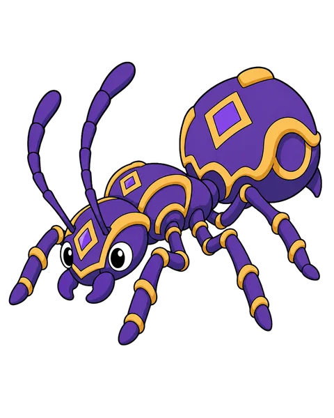
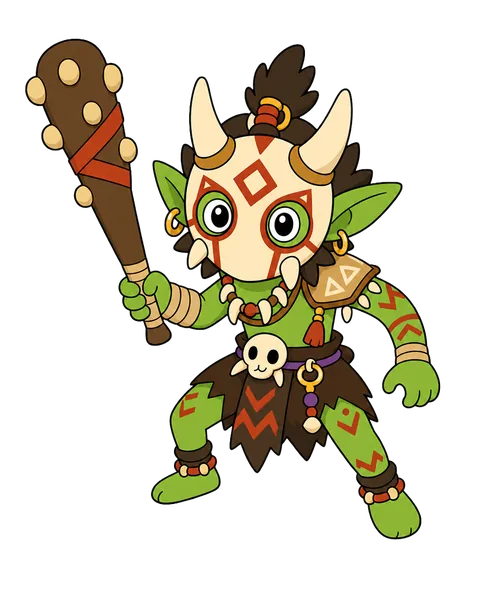
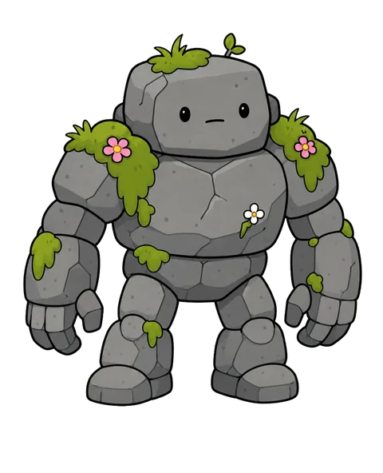
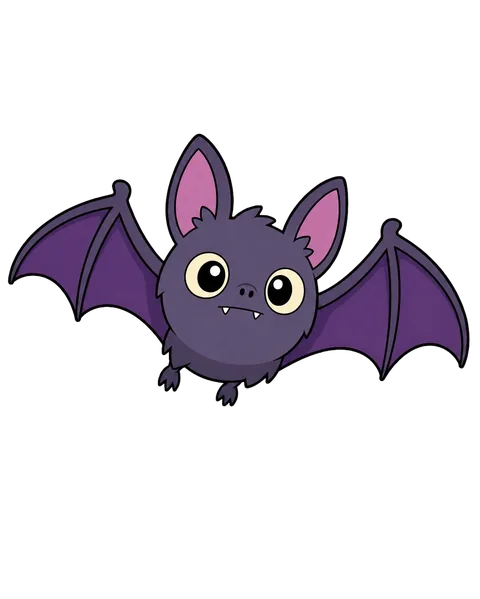
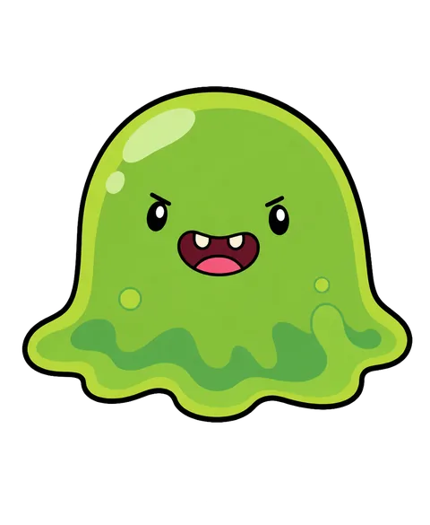
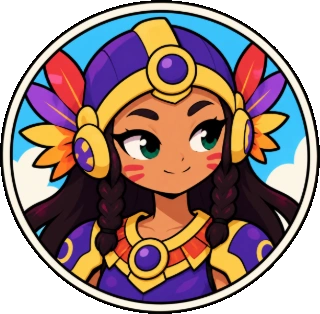
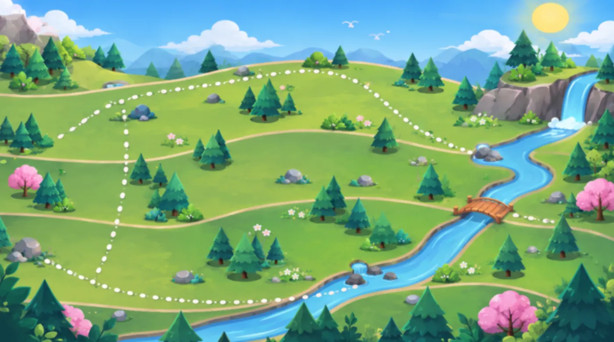
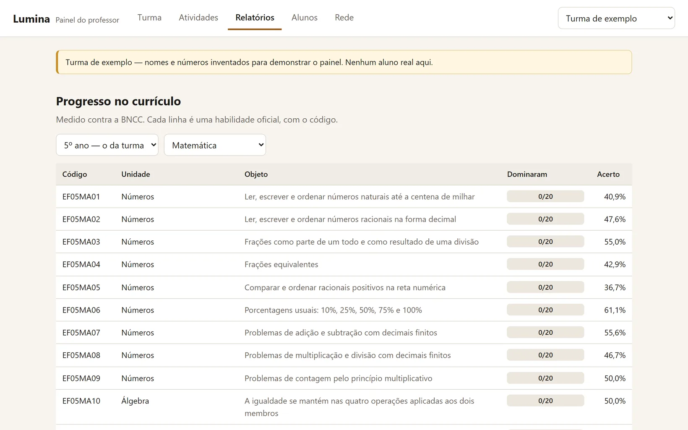
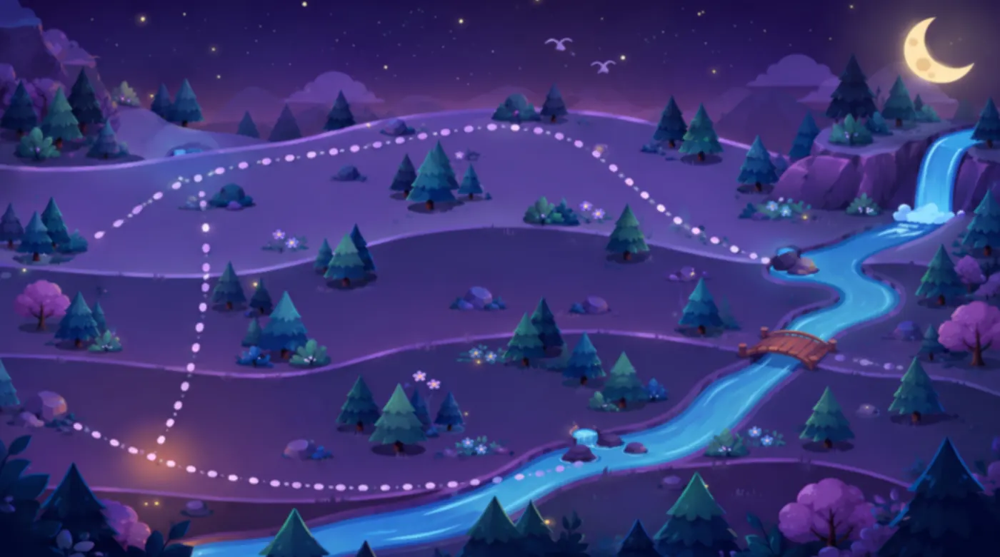

Não é um vilão. É a confusão.
O Embaraço deixou os bichos confusos, e não maus. Quem enxerga o nó desembaraça, e o bicho vira aliado.





Anda, encontra, desembaraça.
Três trechos gravados do jogo, rodando no navegador.
Responder é o que faz o jogo andar.
- RespondeUma pergunta de Matemática ou Português, do ano da criança.
- A Candeia encheAcertou, 3 de Luz. Errou, 1 de Luz, e a Aritana explica.
- Solta um LumeCada carta custa Luz e afrouxa um pouco do nó.
- O bicho se soltaNó em zero, e ele vira carta na sua mão.
Demonstração jogável

A medida sumiu. Responda para encher a Candeia.
Perguntas de verdade, do banco do jogo, com as lições da Aritana.
Cada lugar do mapa é uma unidade da BNCC.
O professor entende em três segundos. A criança nem repara que está numa grade curricular.

111 perguntas escritas, cobrindo 79 das 100 habilidades da BNCC que o jogo acompanha, do 3º ao 5º ano. E a Ponte de Nuvens, fora do mapa, cobra as cinco unidades em rodízio.
Abre na internet que a escola tem.
A maioria das escolas públicas brasileiras tem menos de 1 Mbps por aluno no horário de pico (CETIC, 2025). Mexa nos dois controles.
Com 30 alunos num link de 1,0 Mbps, a primeira tela do jogo chega para a sala toda em 14,4 segundos.
São 58,7 kB por aluno na primeira tela, medidos no jogo de hoje. A sala baixa 1,7 MB ao todo.
O professor tem um painel que a criança nunca baixa.
- A prova que você já tem vira pergunta do jogo.Arquivo .docx ou .pdf. Onde o gabarito não aparece, o painel diz que não achou, em vez de chutar.
- Relatório por habilidade, com o código da BNCC.E uma planilha que o Excel em português abre certo.
- Nenhum nome de aluno acima da turma.Escola, DRE e secretaria veem o conjunto, nunca a criança.


Um piloto começa com uma turma.
Uma sala, um bimestre e, no fim, os números na mesa: o que a turma dominou, habilidade por habilidade.